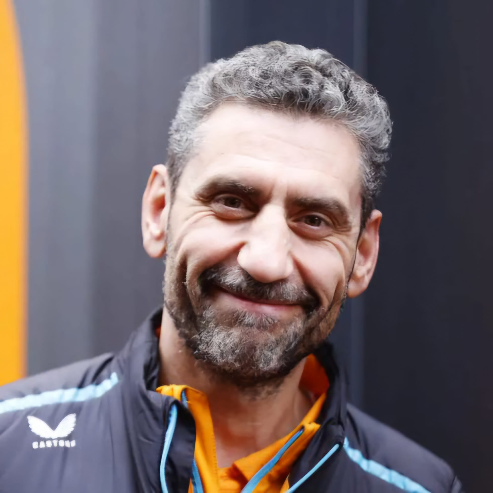

Andrea Stella
Andrea Stella
Team: McLaren
Nationality: Italy
Born: 1971
In charge since: 2023
History: Andrea Stella, born on February 22, 1971, in Orvieto, Italy, is an Italian aerospace engineer and motorsport executive. He became Team Principal of McLaren in December 2022 after serving in several technical leadership roles. Stella holds a PhD in Mechanical Engineering and began his Formula 1 career with Ferrari in 2000 as a performance engineer for the test team before joining Michael Schumacher’s race crew during Ferrari’s dominant years. He later became race engineer for Kimi Räikkönen and Fernando Alonso, contributing to multiple World Championships. Stella joined McLaren in 2015 as Head of Race Operations, rising through the ranks to Performance Director (2018), Executive Director, Racing (2019), and finally Team Principal. Under his leadership, McLaren has returned to championship-winning form, securing back-to-back Constructors’ titles in 2024 and 2025 and the Drivers’ Championship with Lando Norris in 2025. Stella is known for combining technical precision with a strong team-oriented leadership style.
